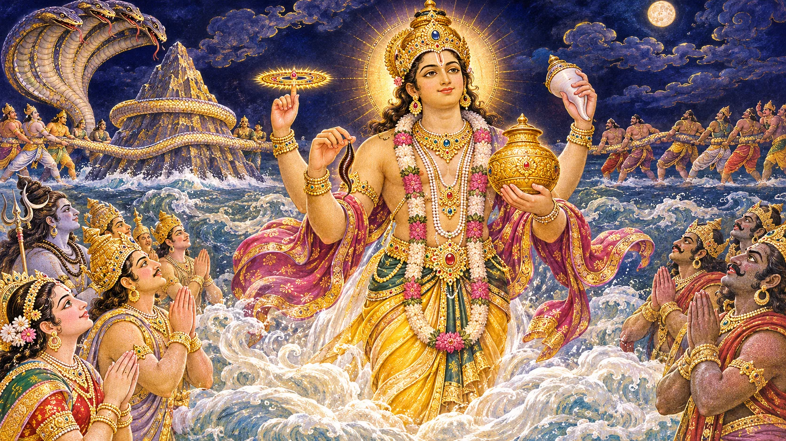
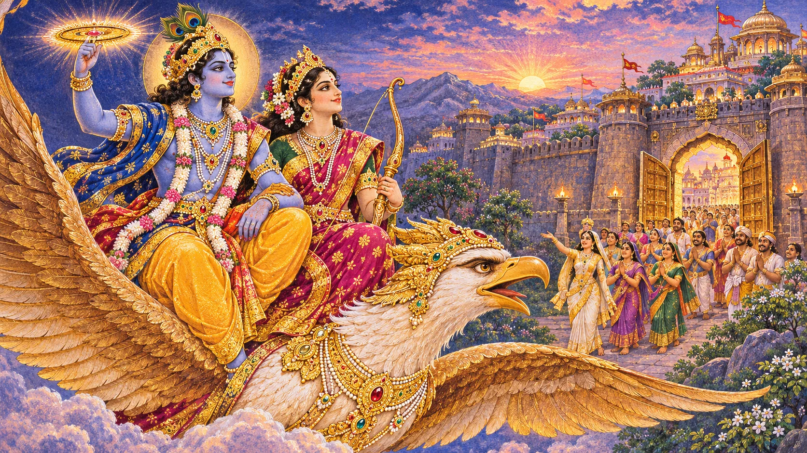
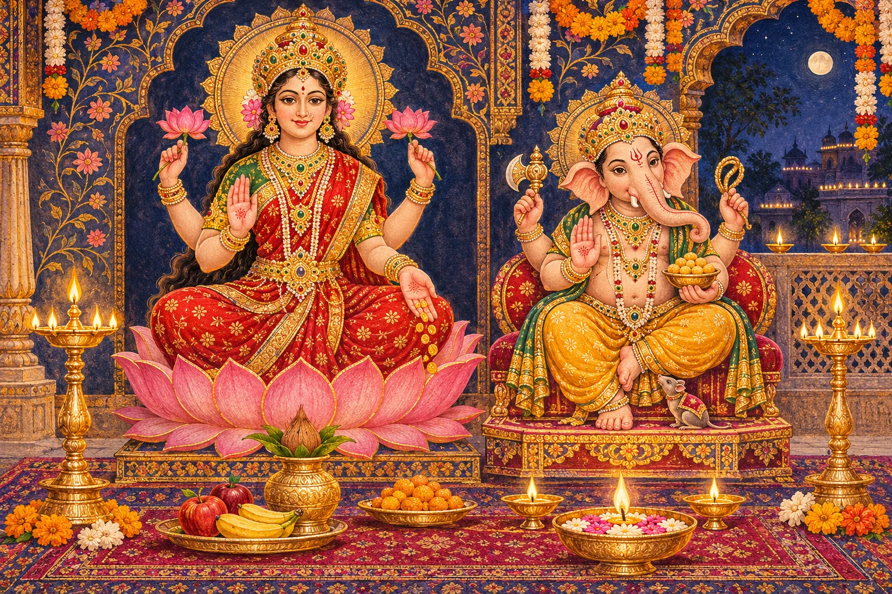
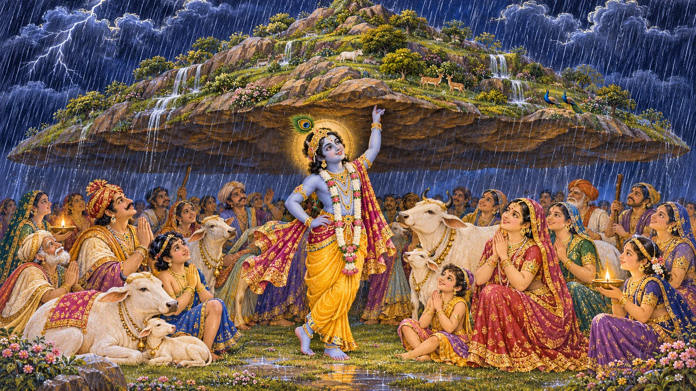
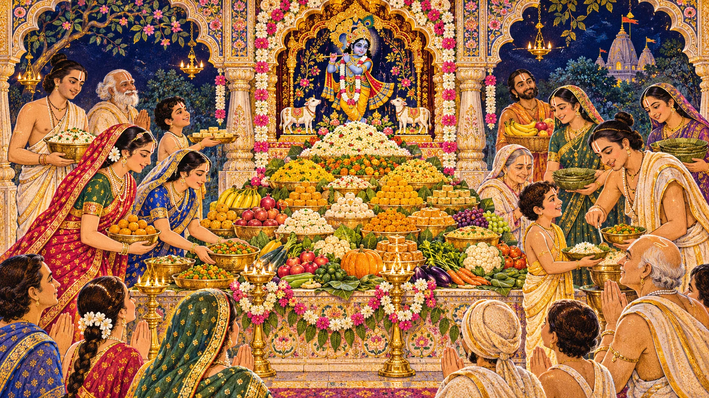
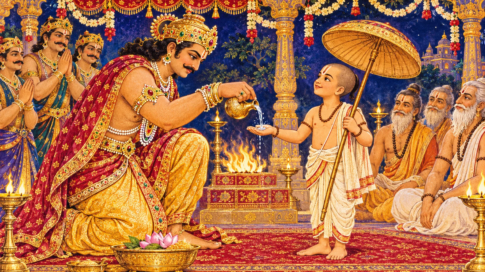
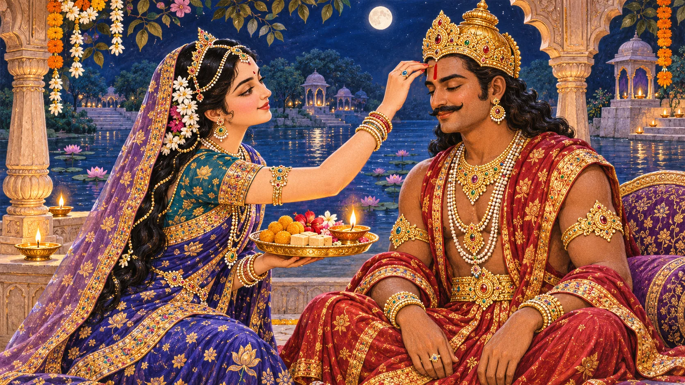

From the first lamp to a sibling’s blessing, the Diwali season brings together healing, courage, homecoming and the joy of sharing.
When is Diwali?
Sunday, 8 November 2026
Amavasya · the new-moon observance
Your local puja time
Check the puja window for your city’s sunset and your family’s tradition. Open the panchang below, select your city and confirm the year is 2026.
Find your city’s date & timing ↗Reference date: Drik Panchang’s New Delhi listing. Your local observance date and puja window may differ.
Why can dates differ?
Festivals follow lunar tithis and the time prescribed for each observance. Local sunrise, sunset and regional traditions can place an observance on a different civil date. Follow the panchang used by your household or temple.
The Diwali festival sequence
This is the traditional lunar sequence. The observances do not always fit five consecutive civil dates in every region. Check ritual-specific timings for the abhyanga bath and your temple’s Annakut programme.
The story begins with Dhanteras

On Dhanteras, families clean and welcome auspiciousness into their homes. The day honours Dhanvantari, associated with Ayurveda and healing, and is also linked to Lakshmi, wealth and wellbeing. The familiar purchase of a metal vessel is a custom, not a religious requirement.
Our separate Dhanteras guide tells the story of the ocean of milk, the emergence of Dhanvantari, and the lamp offered to Yama. Diwali is richer when prosperity is understood as good health, generosity and a household that cares for one another.
The sequence is not identical in every household. Some communities begin with Govatsa Dwadashi or Vasu Baras. A purchase is a custom, not a measure of devotion: a useful vessel and a shared meal can express the same care for the household.
Narak Chaturdashi — the victory over Narakasura

Traditions recount that Narakasura, a tyrannical ruler, caused suffering and held many women captive. Krishna defeats him; in some retellings Satyabhama plays a decisive role. The story celebrates the end of oppression and the restoration of dignity, not violence for its own sake.
In many communities people rise early for an oil massage and ritual bath called abhyanga snan, then light lamps and prepare festive food. In parts of southern India this is the central Deepavali morning. Kali Chaudas has distinct regional practices, especially in western India.
In Bhagavata Purana 10.59, Krishna travels with Satyabhama on Garuda and kills Naraka. The version in which Satyabhama delivers the decisive blow belongs to regional retellings; these are not identical textual accounts. Textual reference.
The abhyanga bath has its own timing rule, often before sunrise. Confirm the bath observance for your city and tradition; a general festival date does not by itself establish that ritual window.
Diwali — Rama returns to Ayodhya
In the Ramayana tradition, Rama returns to Ayodhya with Sita and Lakshmana after years in exile and the defeat of Ravana. Later festival tradition remembers the city illuminated in welcome. The lamps evoke a homecoming: truth, loyalty and the hope that hardship does not have the last word.
This is one of several meanings of Diwali, not the only origin of the festival. Different regions remember different divine stories and historical events, yet share the language of light, renewal and community.
The lamp-filled welcome belongs to the living festival tradition; it is not presented here as a quotation from an unverified verse of Valmiki’s Ramayana. For the wider arc of exile, conflict and return, read our Ramayana guide.
Lakshmi Puja — inviting abundance with gratitude

On the Amavasya evening, many families worship Lakshmi and Ganesha, clean the home, make rangoli, and place diyas at entrances and windows. Lakshmi represents auspicious prosperity; Ganesha represents wisdom and the removal of obstacles. Some business communities honour account books and begin a new financial year.
The most meaningful offering need not be elaborate: a tidy space, flowers, a safe lamp, a little food, a quiet prayer and a promise to use resources wisely. In Bengal, Kali Puja is a major observance on this night. Jain, Sikh and Newar Buddhist communities also mark significant occasions around the Diwali period, with their own histories.
A household can make its intention practical: earn honestly, spend thoughtfully and respond when someone needs help. After arranging the lamps, invite each person to name something they are grateful for and one way they will care for others in the coming year.
Govardhan Puja — Krishna shelters Vrindavan

According to the Bhagavata Purana, Krishna asks the people of Vraja to honour Govardhan Hill, the cows and the land that sustains them. Indra sends a fierce storm, and Krishna raises Govardhan as a shelter for the villagers and their animals.
The story invites gratitude for nature and humility in the face of power. Families and temples may make a small symbolic Govardhan mound, decorate it with flowers, and offer prayers to Krishna. Customs differ by region.
Narrative: Bhagavata 10.24 and 10.25. Govardhan worship follows local tithi rules; a public Annakut gathering may be arranged separately. Check your temple’s announcement when planning a visit.
Annakut — abundance becomes prasad

Annakut means a mountain of food. Homes and temples arrange vegetarian dishes as an offering and then share prasad. It is closely associated with Govardhan Puja, but the menu, ritual order and public event date vary between communities.
A home observance need not reproduce a temple’s enormous display. Rice, dal, seasonal vegetables and a small sweet can express gratitude. Plan portions so food is shared rather than wasted, ask about dietary needs, and acknowledge the people who grow, cook and serve it.
Bali Pratipada — generosity, promise and renewal

At King Bali’s sacrifice, Vishnu appears as Vamana and asks for three paces of land. Bali agrees; Vamana expands to measure earth and heaven, and Bali offers his own head for the third step. The Bhagavata presents Bali as a devotee who keeps his promise, not simply as a villain.
Bali receives a dwelling in Sutala and divine protection. Bhagavata 8.22 grounds this devotional reading. Regional traditions remember the beloved king’s return. Maharashtra’s Diwali Padwa also honours married partnership; Karnataka has its own Balipadyami observances. Kerala’s Onam shares Mahabali’s memory but is a separate festival in another season.
Bali Pratipada and Gujarati New Year follow their own regional calendar rules. Do not assume their local dates always coincide with a Govardhan listing; consult the almanac followed by your community.
A season with many regional voices
In much of northern India, Rama’s welcome, Lakshmi-Ganesha worship and household lamps are prominent. In many southern traditions, including Tamil and Telugu households, the Naraka morning bath, new clothes and festive food take a central place. One region’s sequence is not a universal rule.
Kali Puja has particular importance in Bengal and parts of eastern India. Gujarati traditions emphasize account-book worship and the new year; Maharashtra’s Vasu Baras, Dhantrayodashi, Padwa and Bhau Beej connect the season to household life. Names, foods and practices also vary within each region.
Jains remember Mahavira’s liberation; Sikhs mark Guru Hargobind’s release in Bandi Chhor Divas. Nepal’s Tihar and Newar Swanti traditions have their own identities. These neighbouring celebrations should be understood on their own terms. See Princeton’s introduction.
Bhai Dooj — a blessing between siblings

Bhai Dooj, also called Yama Dwitiya or Bhau Beej, celebrates the affection and mutual care of siblings. A familiar story tells of Yama visiting his sister Yamuna, who welcomes him with hospitality and a ceremonial tilak. In many households sisters bless brothers and share sweets; the underlying message of reciprocal care belongs to all siblings.
For the tilak ceremony, check the local Dwitiya tithi and the afternoon window followed by your tradition. Siblings in different countries may need to agree on a time while respecting each household’s observance.
Siblings living apart can exchange blessings by video call and make a plan to meet. The customary tilak expresses a sister’s wish for her brother’s wellbeing; a modern family can also voice a reciprocal promise to support and respect each other.
A simple Diwali at home — including abroad
Begin with a clean corner, a small rangoli and a few LED lights or safely placed diyas. Prepare a modest vegetarian meal, share sweets with neighbours, call family members far away and tell children why each lamp is lit.
If you have little time, light one lamp mindfully and offer a prayer for health, wisdom and peace. Avoid unsafe fireworks, keep flames away from curtains, and make space for animals and neighbours who may be distressed by noise. The festival is not measured by spending.
A gentle family puja sequence
- Prepare a clean, safe prayer space with flowers or rangoli.
- Bathe, dress comfortably and remember Ganesha and Lakshmi according to family practice.
- Light a lamp and offer water, flowers, fruit or a simple homemade dish.
- Recite a familiar prayer or aarti; complex Sanskrit is not a prerequisite.
- Pray with gratitude for everyone’s wellbeing, then share prasad.
This is a suggested household sequence, not a mandatory rite for every tradition. See the Aarti Sangrah. Supervise flames and choose LED lamps where open flames are not permitted.
Sources and date verification
Reference dates rechecked 5 November 2026 against Drik Panchang’s New Delhi listings. Select your own city for local observance and puja timings. Scriptural narratives and household folklore are identified separately.
- Drik Panchang — Dhanteras, New Delhi reference, 2026
- Drik Panchang — Lakshmi Puja, New Delhi reference, 2026
- Drik Panchang — Bhai Dooj, New Delhi reference, 2026
- Bhagavata Purana 8.8 — Dhanvantari and Lakshmi
- Panchang Guru — King Hima household folklore
- Bhagavata Purana 10.59 — Naraka
- Bhagavata Purana 10.24 — Govardhan worship
- Bhagavata Purana 10.25 — shelter beneath Govardhan
- Bhagavata Purana 8.22 — Bali
- Princeton Hindu Life — Diwali traditions
- NALIS — Divali and its traditions